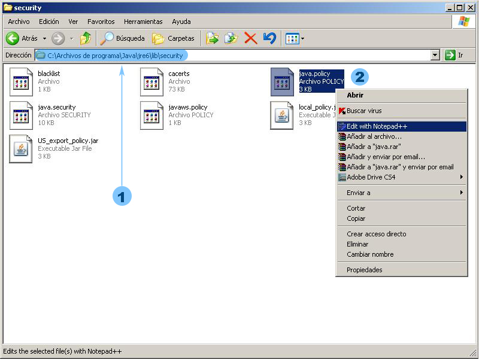
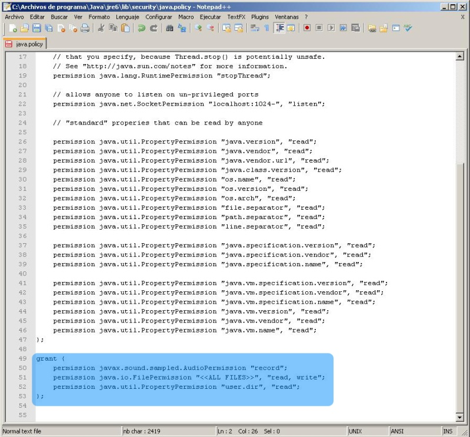

CONFIGURACIÓ PER A GUARDAR SONS D'ÀUDIO
Aquest tipus de pregunta permet a l'alumne enregistrar sons d'àudio per mitjà d'un connector (plug-in) de Java. El connector de Java és una petita aplicació que s'executa en la JVM (màquina virtual de Java) de l'ordinador de l'usuari. Per defecte, la JVM té unes polítiques de seguretat que impedeixen guardar arxius de so. Per això cal canviar aquestes polítiques de seguretat si volem guardar aquests arxius.
Podem fer-ho de dues maneres:
PASSOS
En primer lloc, hem de localitzar el directori on s'ha instal.lat la JVM que utilitza el sistema operatiu. Habitualment, en els sistemes Windows es troba en el directori:
C:\Arxius de programa\Java\jre6\lib\security
Després, polsem el botó dret del ratolí sobre l'arxiu "java.policy" i seleccionem "Edit with Notepad++", tal com mostra la figura 1.

Figura 1
Finalment, editem l'arxiu afegint al final d'aquest les següents línies de codi (vegeu la figura 2):
grant {
permission javax.sound.sampled.AudioPermission "record";
permission java.io.FilePermission "<<ALL FILES>>", "read, write";
permission java.util.PropertyPermission "user.dir", "read";
};

Figura 2